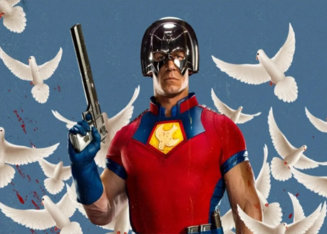
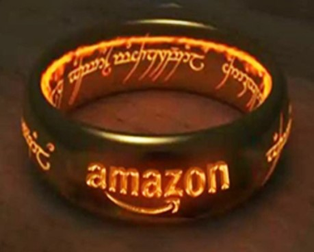
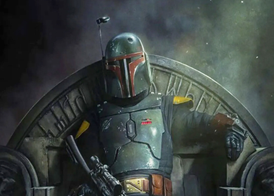

"Fundación" conquista a los espectadores y tendrá temporada 2: Apple TV+ anuncia la renovación de la
serie basada en la obra de Isaac
Asimov
Apple TV+ estrenó "Fundación" hace apenas dos semanas, pero la compañía no ha querido esperar
más
para hacer oficial su renovación por una segunda temporada. De esta forma, sus seguidores podrán
seguir viendo la primera, de la que quedan por lanzarse siete episodios -uno de ellos se podrá
ver a
partir de este viernes 8 de octubre-, con la certeza de que la serie seguirá adelante.

'El Pacificador': HBO Max presenta el primer adelanto y
la
fecha de
estreno
de la serie sobre el personaje de 'El Escuadrón Suicida'
James Gunn y John Cena hablaban hace unos días en la presentación de la serie que HBO Max
estrenará
en enero de 2022 y en la que John Cena volverá a ser El Pacificador, la gran revelación de 'El
Escuadrón
Suicida'.

La serie sobre El Señor de los Anillos ya tiene fecha de estreno
La serie empieza en un momento de paz relativa, miles de años antes de los eventos narrados en
'El
Hobbit' y 'El Señor de los Anillos'.
La Edad Oscura, como también se conoce el período en el que quedará circunscrito el argumento de
la
serie, fue la época en la que Sauron ordenó forjar los Anillos de Poder y aquella en la que se
alcanzó la última alianza entre hombres y elfos.

'El libro de Boba Fett': el spin-off de 'The Mandalorian'
anuncia su
fecha
de estreno en Disney+ con el primer póster
Disney+ aprovechó el final de la segunda temporada de 'The Mandalorian'para anunciar que en
diciembre de 2021 veríamos su spin-off 'The Book of Boba Fett'. Ahora ha aparecido un primer
cartel
oficial de la serie que desvela su fecha de estreno exacta: el 29 de diciembre.